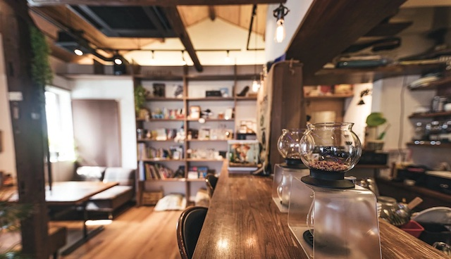
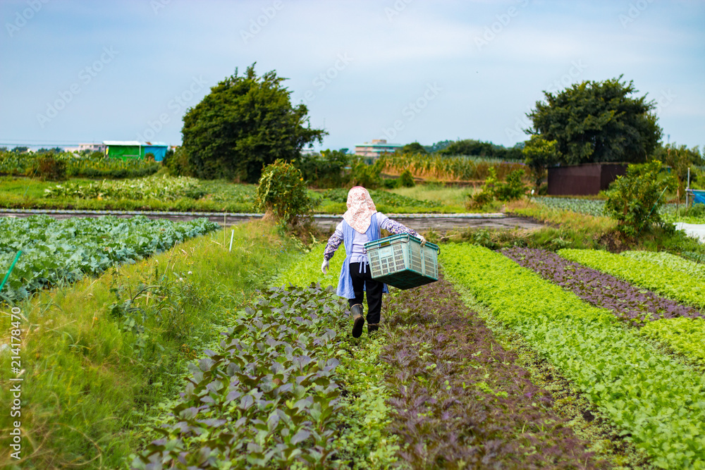

豊かな自然と
暮らす
弥石町での暮らしは、時計の針ではなく、太陽の動きや季節の移ろいと共にあります。
森のささやきで目覚め、澄んだ空気の中で土に触れる。そんな贅沢な時間がここには流れています。
冬の厳しさは春の訪れの喜びを深め、厳しい自然と向き合うからこそ生まれる地域コミュニティの温かさも、この町の大きな魅力です。
利便性だけでは測れない、生命力溢れる「真の豊かさ」を求める人々へ、新しいライフスタイルの舞台を提案します。
-
五感を呼び覚ます
大地の日常蛇口をひねれば山の伏流水が流れ、庭先では季節の野菜が育つ。
弥石町の暮らしには、自然がもたらす本物の贅沢があふれています。
利便性という言葉では語れない、土の匂いや森の静寂が、日々の生活に心地よいリズムと活力を与えてくれます。 -
創業・出店サポート

弥石町では、自分らしく商売を始めたい若い世代を全力でバックアップしています。
古民家を活用したカフェや、地元の旬を活かしたレストランなど、あなたの「やりたい」を形にするための支援金制度や、空き家情報の提供を積極的に行っています。 -
つながりと開拓の精神

かつてこの地にコタンが築かれた時代から続く、他者を迎え入れ、共に生きる精神。
弥石町には、新しい挑戦を温かく見守り、助け合うコミュニティがあります。
移住者同士のネットワークも盛んで、孤独を感じることなく、新しい土地での一歩を踏み出すことができます。